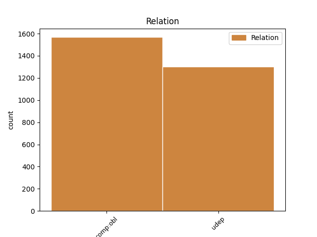
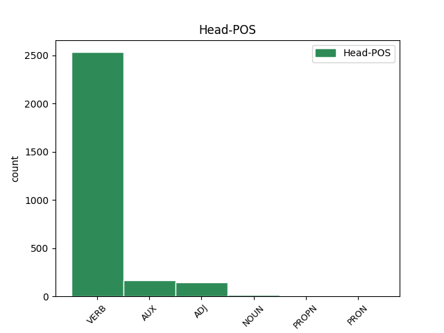
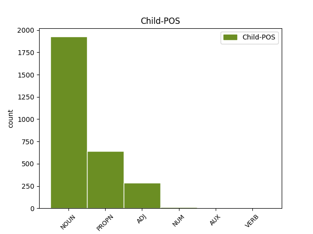

Distribution of features within this leaf



Agreement Rules sorted by frequency.
- When the dependent token is the underspecified dependency(udep) of the head token, and the dependent token is NOUN.
1 Пѣвше пѣти VERB V- Case=Nom|Gender=Masc|Number=Plur|Strength=Strong|Tense=Past|VerbForm=Part|Voice=Act 0 _ _ _
2 пѣснь _ _ _ _ 0 _ _ _
3 старымъ _ _ _ _ 0 _ _ _
4 княземъ кънязь NOUN Nb Case=Dat|Gender=Masc|Number=Plur 1 udep _ ref=215
5 а _ _ _ _ 0 _ _ _
6 потомъ _ _ _ _ 0 _ _ _
7 молодымъ _ _ _ _ 0 _ _ _
8 пѣти _ _ _ _ 0 _ _ _
1 Тяжко тяжькыи ADJ A- Case=Nom|Degree=Pos|Gender=Neut|Number=Sing|Strength=Strong 0 _ _ _
2 ти _ _ _ _ 0 _ _ _
3 головы голова NOUN Nb Case=Gen|Gender=Fem|Number=Sing 1 comp:obl _ ref=210
4 кромѣ _ _ _ _ 0 _ _ _
5 плечю _ _ _ _ 0 _ _ _
1 Слава слава NOUN Nb Case=Nom|Gender=Fem|Number=Sing 0 _ _ _
2 Игорю игорь PROPN Ne Case=Dat|Gender=Masc|Number=Sing 1 comp:obl _ ref=216
3 Святъславличю _ _ _ _ 0 _ _ _
4 буй _ _ _ _ 0 _ _ _
5 туру _ _ _ _ 0 _ _ _
6 Всеволоду _ _ _ _ 0 _ _ _
7 Владиміру _ _ _ _ 0 _ _ _
8 Игоревичу _ _ _ _ 0 _ _ _
1 зегзицею _ _ _ _ 0 _ _ _
2 незнаемь незнаемыи ADJ A- Case=Dat|Degree=Pos|Gender=Fem|Number=Sing|Strength=Strong 4 comp:obl _ ref=168
3 рано _ _ _ _ 0 _ _ _
4 кычеть кыкати VERB V- Mood=Ind|Number=Sing|Person=3|Tense=Pres|VerbForm=Fin|Voice=Act 0 _ _ _
1 уношу _ _ _ _ 0 _ _ _
2 князю _ _ _ _ 0 _ _ _
3 Ростиславу _ _ _ _ 0 _ _ _
4 затвори затворити VERB V- Aspect=Perf|Mood=Ind|Number=Sing|Person=3|Tense=Past|VerbForm=Fin|Voice=Act 0 _ _ _
5 Днѣпрь дънѣпръ PROPN Ne Case=Acc|Gender=Masc|Number=Sing 4 udep _ ref=197
6 темнѣ _ _ _ _ 0 _ _ _
7 березѣ _ _ _ _ 0 _ _ _
1 Тому тыи ADJ Pd Case=Dat|Gender=Masc|Number=Sing 8 udep _ ref=162
2 вѣщей _ _ _ _ 0 _ _ _
3 Боянъ _ _ _ _ 0 _ _ _
4 и _ _ _ _ 0 _ _ _
5 пръвое _ _ _ _ 0 _ _ _
6 припѣвку _ _ _ _ 0 _ _ _
7 смысленый _ _ _ _ 0 _ _ _
8 рече рещи VERB V- Aspect=Perf|Mood=Ind|Number=Sing|Person=3|Tense=Past|VerbForm=Fin|Voice=Act 0 _ _ _
1 се _ _ _ _ 0 _ _ _
2 же _ _ _ _ 0 _ _ _
3 ꙗкоже _ _ _ _ 0 _ _ _
4 то _ _ _ _ 0 _ _ _
5 самъ _ _ _ _ 0 _ _ _
6 видѣвъ _ _ _ _ 0 _ _ _
7 исповѣда исповѣдати VERB V- Aspect=Perf|Mood=Ind|Number=Sing|Person=3|Tense=Past|VerbForm=Fin|Voice=Act 0 _ _ _
8 ѥдиномѹ единъ NUM Ma Case=Dat|Gender=Masc|Number=Sing 7 comp:obl _ ref=49
9 ѿ _ _ _ _ 0 _ _ _
10 братиꙗ _ _ _ _ 0 _ _ _
11 въ _ _ _ _ 0 _ _ _
12 манастыри _ _ _ _ 0 _ _ _
13 блаженааго _ _ _ _ 0 _ _ _
14 иже _ _ _ _ 0 _ _ _
15 истиньна _ _ _ _ 0 _ _ _
16 сѹть _ _ _ _ 0 _ _ _
1 въ _ _ _ _ 0 _ _ _
2 лѣт҃ _ _ _ _ 0 _ _ _
3 ҂ѕ҃ _ _ _ _ 0 _ _ _
4 х҃ _ _ _ _ 0 _ _ _
5 к҃ _ _ _ _ 0 _ _ _
6 ѕ _ _ _ _ 0 _ _ _
7 прѣстави _ _ _ _ 0 _ _ _
8 сѧ _ _ _ _ 0 _ _ _
9 дъмитръ _ _ _ _ 0 _ _ _
10 зивидиць _ _ _ _ 0 _ _ _
11 посадникъ _ _ _ _ 0 _ _ _
12 новъгородьскꙑи _ _ _ _ 0 _ _ _
13 иѹлѧ _ _ _ _ 0 _ _ _
14 въ _ _ _ _ 0 _ _ _
15 ѳ҃ _ _ _ _ 0 _ _ _
16 посадникъ _ _ _ _ 0 _ _ _
17 новъгородьскꙑи _ _ _ _ 0 _ _ _
18 посадницѧвъ посадьничати VERB V- Case=Nom|Gender=Masc|Number=Sing|Strength=Strong|Tense=Past|VerbForm=Part|Voice=Act 0 _ _ _
19 з҃ _ _ _ _ 0 _ _ _
20 мс҃ць _ _ _ _ 0 _ _ _
21 одинѹ одинъ NUM Ma Case=Acc|Gender=Fem|Number=Sing 18 udep _ ref=true
1 тѣмь _ _ _ _ 0 _ _ _
2 же _ _ _ _ 0 _ _ _
3 и _ _ _ _ 0 _ _ _
4 мы _ _ _ _ 0 _ _ _
5 братиѥ _ _ _ _ 0 _ _ _
6 отърекъшеи _ _ _ _ 0 _ _ _
7 сꙗ _ _ _ _ 0 _ _ _
8 мира _ _ _ _ 0 _ _ _
9 отъврьзѣмъ отъврѣщи VERB V- Mood=Imp|Number=Plur|Person=1|Tense=Pres|VerbForm=Fin|Voice=Act 0 _ _ _
10 сꙗ _ _ _ _ 0 _ _ _
11 и _ _ _ _ 0 _ _ _
12 сѹщиихъ быти AUX V- Case=Gen|Gender=Neut|Number=Plur|Strength=Weak|Tense=Pres|VerbForm=Part|Voice=Act 9 udep _ ref=20
13 въ _ _ _ _ 0 _ _ _
14 немь _ _ _ _ 0 _ _ _
Disagree Examples:
1 а _ _ _ _ 0 _ _ _
2 ꙗзъ _ _ _ _ 0 _ _ _
3 ждалъ жьдати VERB V- Aspect=Res|Case=Nom|Gender=Masc|Number=Sing|Strength=Strong|VerbForm=Part|Voice=Act 0 _ _ _
4 в _ _ _ _ 0 _ _ _
5 новѣгородѣ _ _ _ _ 0 _ _ _
6 двѣ дъва NUM Ma Case=Acc|Gender=Fem|Number=Dual 3 udep _ ref=2
7 недли _ _ _ _ 0 _ _ _
8 посла _ _ _ _ 0 _ _ _
9 татарьскаго _ _ _ _ 0 _ _ _
10 ширвашина _ _ _ _ 0 _ _ _
11 асамъ _ _ _ _ 0 _ _ _
12 бѣга _ _ _ _ 0 _ _ _
1 да _ _ _ _ 0 _ _ _
2 вѣсть _ _ _ _ 0 _ _ _
3 дали дати VERB V- Aspect=Res|Case=Nom|Gender=Masc|Number=Plur|Strength=Strong|VerbForm=Part|Voice=Act 0 _ _ _
4 в _ _ _ _ 0 _ _ _
5 хазъторокани _ _ _ _ 0 _ _ _
6 цр҃ю цѣсарь NOUN Nb Case=Dat|Gender=Masc|Number=Sing 3 comp:obl _ ref=3
1 и _ _ _ _ 0 _ _ _
2 ѡны _ _ _ _ 0 _ _ _
3 его _ _ _ _ 0 _ _ _
4 взѧли възяти VERB V- Aspect=Res|Case=Nom|Gender=Masc|Number=Plur|Strength=Strong|VerbForm=Part|Voice=Act 0 _ _ _
5 часа часъ NOUN Nb Case=Gen|Gender=Masc|Number=Sing 4 udep _ ref=3
6 того _ _ _ _ 0 _ _ _
1 а _ _ _ _ 0 _ _ _
2 бол꙽шимъ _ _ _ _ 0 _ _ _
3 есмѧ _ _ _ _ 0 _ _ _
4 сѹдном судьно NOUN Nb Case=Ins|Gender=Neut|Number=Sing 5 udep _ ref=3
5 дошли доити VERB V- Aspect=Res|Case=Nom|Gender=Masc|Number=Plur|Strength=Strong|VerbForm=Part|Voice=Act 0 _ _ _
6 до _ _ _ _ 0 _ _ _
7 морѧ _ _ _ _ 0 _ _ _
1 и _ _ _ _ 0 _ _ _
2 били бити VERB V- Aspect=Res|Case=Nom|Gender=Masc|Number=Plur|Strength=Strong|VerbForm=Part|Voice=Act 0 _ _ _
3 есмѧ _ _ _ _ 0 _ _ _
4 емꙋ _ _ _ _ 0 _ _ _
5 челом чело NOUN Nb Case=Ins|Gender=Neut|Number=Sing 2 comp:obl _ ref=4
6 чтобы _ _ _ _ 0 _ _ _
7 нас _ _ _ _ 0 _ _ _
8 пожаловалъ _ _ _ _ 0 _ _ _
9 чѣм _ _ _ _ 0 _ _ _
10 доити _ _ _ _ 0 _ _ _
11 до _ _ _ _ 0 _ _ _
12 рꙋси _ _ _ _ 0 _ _ _